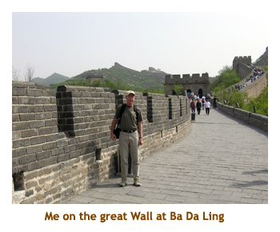

[ Home ] [ Travel ] [ Photography ] [ Pets ] [ Games] [ Rowing] [ Physics ]


A Visit to Mainland China - Part 1
Travel
Cruises
Past Cruises (Diaries)
Future Cruises
Rogues Galleries
Land Trips
Diaries (Land Trips)
Hawai'i - Big Island - 04'01
Hawai'i - Maui - 05'02
Hawai'i - Big Island - 04'03
Hawai'i - Kaua'i - 09'04
Hawai'i - Big Island - 04'06
Hawai'i - Maui - 04'06
Mainland China - 05'07
Phoenix, Arizona - 12'07
Greek Isles - 05'08
Hawai'i - Kaua'i - 09'08
Hawai'i - Big Island - 09'09
Hawai'i - Maui - 05'12
Hawai'i - Big Island - 04'13
Ireland - 08'13
Mexico - Cancun 11'13
France/Belgium/Lux 07'15
Hawai'i - Big Island - 05'17
England / Wales - 06'17
Hawai'i - Big Island - 09'19
Photography
Cameras
Underwater
Pets
Tara
Blackie
Whitey
Muffy
Ollie
Rusty
Fluffy
Rufus&Dufus
Games
Rowing
Physics
Day 1, 2 (May 5, 6) - Flight to Beijing
We met at the Calgary airport at 9:30 AM. We were flying to Vancouver
(1 hour) and then on to Beijing (11 hours). Because of the International
Dateline, we would arrive in Beijing on the next day. The Beijing flight
was long! They fed us 3 times on the flight so we certainly didn't go
hungry. Our group of 32 was randomly distributed throughout the aircraft.
I ended up in a group of Chinese people who didn't speak English, near
the front of the plane. A Chinese gentleman from mid-cabin came up to
see the woman beside me after takeoff and I reasoned out that he was her
husband. I offered to change seats with him and they were so pleased!
I was hoping to be near my classmates, but instead ended up in the midst
of a large group from central Quebec who didn't speak much English either.
Needless to say it was a boring trip. However, we eventually arrived safe,
sound and ontime. It was about 3 PM on May 6. We transitted through customs
and then grabbed our bags. We met our main tour guide, Steven, who would
accompany us for all 21 days of the trip. Local guides will augment him
at some of the remote sites. Then we headed out to the bus. It was quite
warm (32 degrees) and humid in Beijing - a taste of the weather to come.
The bus ride to our hotel was 20 minutes or so through the city. I was surprised that the city didn't seem to be foreign at all. I guess having experienced Vancouver's Chinatown and having had numerous Chinese friends and work mates, it just isn't all that different here. Mind you, that's the city. I suspect the poorer areas and the countryside will be quite different. We arrived at our hotel, the Xiyuan Hotel, and checked in. We had till 6 PM to get ready for our first Chinese dinner.
We went to a nearby Chinese restaurant for a multi-course dinner. It
was typical Chinese food but very good. The vegetables were really fresh
and the chicken and pork excellent. We got back to the hotel about 8 PM
and everyone crashed for the night. I went to sleep right away and woke
up feeling I'd had a nice long sleep. It was 10:30 PM! I think I dozed
on and off for the next few hours, but ended up getting up at 3 AM and
starting my journal.
Day 3 (May 7) - First full day in Beijing
Our first full day in Beijing was a busy one. Having been up early anyways, I joined a number of other "couldn't sleepers" for breakfast at 6:30. The hotel puts on a huge buffet spread - a variety of fresh fruit (sweet and really good), yogurt, tomatoes, cucumber, various cereals, several types of eggs, bacon, sausage, ham and, of course, Chinese food! Great fruit juices too.
We boarded the bus at 8:30 and headed to
Tian'an Men Square.
It was a
hot day, hitting 33 or so and quite humid. It was very hazy (smoggy?)
and at times was hard to breathe. Our guide mentioned a sand storm from
the Gobi Desert. Anyway, Tian'an Men Square is huge. Lots of tourists
and locals bustled around, but they were dwarfed by the size of the square.
I think the guide said it was 175 acres or something like that. There
were two pictures of
Mao Zedong
and
Dr. Sun Yat-sen
facing each other
across the square. Then we hiked across the road (under it, actually)
to the
Forbidden City.
The Forbidden City was completed in 1420 under the Ming Emperor Yongle. Since then it has been home to 13 Ming dynasty emperors (1420 thru 1644) and 10 Qing dynasty emperors, ending with "The Last Emperor" Pu Yi in 1911. The symbolic center of the Chinese universe, the palace was the exclusive domain of the imperial court and dignitaries until the 1920's. It was fully opened to the public in 1949.
The Forbidden City is HUGE. We walked the length of the Forbidden City
from the south end to the north end and it took us about 2 1/2 hours (with
lots of stops). We saw the buildings where the government officials resided
/ worked, and the "palace" where the Emperor lived. We were all tired
and very hot by the time we had toured the park. Then it was off to lunch
for - what else - Chinese food. Once again the food was delicious. They
always serve beer with the meal, so that was refreshing.
After lunch we headed to another huge park to see Tian Tan (the Temple of Heaven). The temple was completed during the Ming Dynasty and is one of the largest temple complexes in China. It was here that the emperor would make sacrifices and pray to heaven and his ancestors at the winter solstice. As the Son of Heaven, the emperor could intercede with the gods on behalf of his people and pray for a good harvest. The Temple of Heaven was an amazing building and we spent about 2 hours at the site.
The plan was to go directly from the tour to dinner and the opera, but when the tour guide noticed how hot and sweaty were were, he asked if we wished to shorten the afternoon tour to give time to go back to the hotel before dinner. If anyone had said "hey, we paid for the tour, so we want our money's worth", the group would have collectively killed them.
It didn't take long to get around the city. I should mention that the
traffic was quite good yesterday and today because it was the tail end
of the week long May 1 public holiday. Everyone goes back to work tomorrow
so the traffic will be back to normal.
We made it back to the hotel just after 4 and had an hour to clean up before being picked up for dinner at 5:15. Dinner was at another top rate restaurant serving ... yes ... Chinese food.There are lots of other "ethnic" restaurants in Beijing - like Muslim, Italian, etc, but the tour seems to focus on Chinese only. This restaurant had a small stage and 4 girls in traditional costumes put on a show for us.
Then we headed to the opera at the Liyuan Theatre in the Jianguo Hotel. Beijing Opera began in the Qing Dynasty. It is said that the Qianlong Emperor (r.1736-96) was rather taken by the operas in Anhui and Hebei and brought these troups back to Beijing, where a new form of opera was established. The Guangxu Emperor and the Dowager Empress Cixi were also keen devotees and helped develop the art form. The show was amazing with beautiful costumes, singing, acting, juggling and unbelievable tumbling. We all really enjoyed it.
Finally, after a long day we returned to the hotel where I am writing
this journal. It was dark coming home, and we drove through the downtown
area. The buildings were all lit up and really looked nice. I guess the
downtown is being spruced up for the Olympics.
Day 4 (May 8) - Second full day in Beijing
 So, I'm getting used to the time zone and arose at 4 AM. That gave me time to catch up on sports on ESPN (except for hockey!). Breakfast was at 6:30 and we were off in the bus by 8. It was cool outside and cloudy with a nice breeze. The temperature would only reach 24 degrees today.
This morning is the
Great Wall.
The Great Wall was created during the reign of
Emperor Qin
by joining together existing short segments of wall structures. Since then it has been
rebuilt and added on to by various emperors, with most of the "modern" wall
dating to the Ming Dynasty. It was a scenic drive to the wall. The bustle of Beijing
disapated to almost nothing and soon we were in the mountains. There are
quite a few places to see the Wall, and we stopped at the
Ba Da Ling site.
It is very hilly there and the Wall climbed up the hillside in either
direction. We all set off up the Wall, with some of my classmates dropping out as
we went. There were parts that were very steep and the steps were quite
uneven. A few of us did about a mile to the end of the wall "spur". Quite
a view from up top. It was very windy with lots of sand in the air. I
was amazed at the number of people of all ages along the Wall, and the
number of people selling stuff.
After returning to the bus we headed out to a restaurant for lunch (the Ku Ong). This time we decided to do Chinese food. It was excellent. The restaurant was part of a copper vase / bowl factory with a huge gift shop. The group had decided to do a gift exchange on the last day of the trip (limit $10 Cdn), so I did my shopping there.
After lunch we were bused to the site of the MingTombs. 13 of the 16 Ming dynasty (1368 - 1644) emperors are buried there. (The first two Ming emperors are buried near Nanjing, before the capital was moved to Beijing, and a third emporer was murdered and not given an official burial.) Each tomb covers many acres, so we only visited one of them called Ding Ling - the tomb of the Wanli Emperor. He had built an underground "palace" several stories underground. We walked through the tomb, but not much was left there. The grounds were very placid with nice gardens and outbuildings.
It started to rain as we left the tombs. We were off to another Chinese
restaurant for
Peking Duck
. Once again the food was excellent, interrupted
only by a brief arguement as to whether it should really be called Beijing
Duck. We arrived back at the hotel and boy, was I tired! The walk
up the Wall must have done me in! I'm sure glad that it was a cooler day
today.
Day 5 (May 9) - Third full day in Beijing
Another early wakeup (4 AM). Darn! Also, a baby was crying in the room across the hall. This hotel is used for the baby adoption program and there is a group of young parents from Quebec (or France?) here picking up Chinese babies. They have to stay at the hotel for 3 days as part of the adoption process. Lots of people with baby strollers all over the hotel.
Today was smog free and sunny, and not overly hot. After our 6:30 breakfast,
we headed off in the bus to the
Babaoshan Revolutionary Martyr's Cemetery.
This is a Communist Party martyr / hero / high official cemetery and is normally
off limits to non-chinese. Our Professor had asked for permission to visit and was
told "no" as it was such a large group. Further negotiation with the regional
goverment reversed the decision yesterday! One of the sweetners was that we
offered to put wreaths on the 3 graves we visited. Practically all of the graves are for
Chinese communists, but a few are for foreigners who have supported the Communist
Party. The three graves we visited were
Agnes Smedley,
Anna Louise Strong and
Dr. George Hatem.
These are considered as heros in China today.
Dr. Norman Bethune
is also a national hero, but is buried elsewhere.
After touring through the cemetery,
we went to a Lama Temple (Tibetan / Buddhist) called the
Yong He Gong.
It was constructed in the 17th century and converted into a Tibetan lamasery in 1744.
It is a large courtyard with a series of 5 halls that you pass through, decorated with
Han, Mongol and Tibetan motifs. Lots of people
were there with burning incense, praying to their ancestors.
The first hall had a large
Laughing Buddha (Milefo)
back-to-back with
Wei Tuo,
the Protector
of the Buddhist Doctrine and flanked by the Four Heavenly Kings. Yonge Hall had 3 manifestations
of Buddha, flanked by 18 luohan. The Tibetan styled Falun Hall
(Hall of the Wheel of Law) had a statue of
TsongKhapa,
the founder of the Yellow Hat sect of Tibetan Buddhism.The final hall, the
towering Wanfu Pavilion, had a huge statue of
Maitreya (the Future Buddha)
that is 55 ft (17 m) tall, carved out of a single block of sandlewood. At the rear
of the final hall was an exhibition of Tibetan Buddhist objects including statues of
Padmasambhava
(Guru Rinpoche) and
Chenresig.
After the temple we headed to a Chinese restaurant
for lunch. It was very good. I'm getting used to having beer with every meal as
this is incuded with the meal.
After lunch we took a drive through the Olympic Village and facilities area. Lots of
work going on there, but it is far from finished. The buildings are very large and of
striking designs. Then we continued on to the
Summer Palace
(Yihe Yuan) . It is a huge park built in the early
Qing dynasty
era (1700's). The are many beautiful buildings and
a large lake. It served as an imperial retreat from the stifling summer heat of the
Forbidden City. Despite existing as an imperial park in earlier days, it was not
until the time of
Emperor Qianlong,
who reigned from 1736 to 1795, that the
Summer palace assumed its current layout. The palace is most associated with the
Empress Dowager Cixi
who had it rebuilt twice: once following its destruction by French and
English troops in 1860, and again in 1902 after it was plundered during the
Boxer Rebellion.
We hiked around the park area and then did a boat trip across the
lake. It was very serene. Especially interesting was the "long Corrider" (Chang Lang)
decorated with over 14,000 scenic paintings.
There were lots of people there, even though it was a work day.
Next we went to the "Old" Summer Palace (Yuanming Yuan - the Garden of Perfect Brightness). This was a collection of princely gardens fused into the main mass by the Qing Qianlong emporer in the mid-18th century. He commissioned Jesuits at his court to design and construct a set of European-style buildings in one corner, which they likened to Versailles. It was destroyed by the French and British in 1860 during the second Opium War, and many of the remains were further destroyed and removed by locals as building materials. China has left the ruins as is, in order to remind the people of the horrors of Western imperialism and the ineffectual rule of the Qing emperors. Also interesting is the Palace Maze which has been reconstructed in concrete, just west of the ruins. We didn't have enough time to see most of the park. Next time!
Then it was off to dinner for more Chinese food. This was quite different from the other restaurants we had been to and I didn't care for it as much. Then, back to the hotel for a good night's sleep (I hope).
We drove through a lot of Beijing today and it really is a beautiful city. The
main streets and boulevards are huge, and are lined with flowers (petunias and
marigolds) and roses. The traffic is busy, but not as bad as I had expected. The
public transportation is wonderful. There is 175 Km of underground subway routes
(over 300 km by the time of the 2008 Olympics),
and city buses are everywhere. The buses are in excellent condition and washed
daily. Bronco Dave could learn from this city! The sidewalks are very clean with
lots of employees sweeping and keeping things neat.
Day 6 (May 10) - Beijing to Qingdao
Observation: The cars in Beijing are very new and kept spotless. Lots of VW's, BMW's, Hondas, etc. Very avant garde. The bicycles are all from the 1800's, rusty and falling apart. What gives???
Today was a "morning on our own". I had planned to just go walking from the hotel and
take pictures. At breakfast I sat with a Mike and Bev who had been to Beijing several times
and spoke a bit of Chinese. They were going to a shopping area used by locals in
the southern part of Beijing (I forget exactly where). They graciously invited me along and
we jumped in a cab and headed off. The area was just like "old China". There were antique
shops, art shops, open air butcher shops, fruit and veggie stalls, etc. Locals were buzzing
around on their bicycles. Some of the shops were very decrepit and others seemed newer.
It was just was as I imaged China to be 50 years ago. It was wonderful. We wandered around
for a couple of hours browsing the shops and taking pictures. This place
really had character. It was so different from the
touristy areas with the agressive shopkeepers and the knock-off merchandise.
Thank you Mike and Bev!!
We were back at the hotel by 11:30 to check out. We headed off on the bus to visit the
grave of
Matteo Ricci
(the Jesuit hero) behind the French Church on Maweigou (Horsetail Ditch)
Road (now the Beijing Communist Party School where the Communists learn to party). This is
another site that is normally not seen by tourists. Matteo Ricci first came to China in 1582
after studying the Chinese language in Macao. He worked for a period in Zhaoqing,
then the capital of Guangdong Province, and a number of other places before receiving
permission to enter Beijing in 1601. Upon his arrival at the capital, Ricci presented Emperor
Wanli with maps of foreign countries, a chiming clock and other gifts, which induced the
emperor to permit Ricci to carry on missionary work in Beijing, and to approve the building
of the Southern Cathedral (Nantang), the first Catholic church in the city, near Xuanwumen.
Ricci died in Beijing in June 1610 at the age of 58. According to the code of the
Ming Dynasty, foreigners who died in China had to be buried in Macao. The Jesuits
made a special plea to the court, requesting a burial plot in Beijing in view of Ricci' s
contributions to China. Emperor Wanli granted his permission and
designated a Buddhist temple, which had been appropriated from a court eunuch for the
purpose. In October of 1610, the Jesuit Father' s remains were transferred to the tomb.
Numerous other non-Chinese people are buried in this cemetery. Maybe Macao
was full ...
After wandering the cemetery, we boarded the bus and went to a nice restaurant for -
Chinese food. Once again the food was excellent. I find that I typically don't care for every
dish that is served, but I find at least half of them to be delicious. After lunch we headed to the
"Silk Market" which is a 6 floor department store set up like a flea market. Each floor features
a given theme, such as clothing, electronics, jewelry, etc. Rows of stalls have been set up with
narrow passageways separating the rows. It is much like an indoor night market. The sales
girls are the most aggressive people I've ever seen. As you walked down the aisle
they would block your progress, grab your wrist and act abnoxious. I really
don't care for shopping in this kind of environment. I lasted about 10
minutes and then headed outside. You have to be a real hardcore shopper to survive this place.
Another classmate (Marnie) felt the same way and we ended up
having a great walk around the block instead.
There was lots going on in the street with people hustling to and from wherever, street vendors displaying their wares and some beautiful floral displays. The Chinese seem to really like flowers. Numerous offices and temples have beautiful flower arrangements out front, mostly done with potted plants on the sidewalk rather than in a fixed garden. I don't know what the advantage is to keeping the plants potted, but it must be easier to maintain.
Then it was off to the airport for our flight to
Qingdao,
the beer city (Tsing Tao).
The flight was only about an hour and we were checked into the hotel by 10 PM.
As we drove to our new hotel, you could see how different Qingdao was from Beijing.
The city seemed newer, less office towers and tons of flashing neon everywhere.
Whereas Beijing was very flat, Qingdao is very hilly. And, of course, Qingdao is
right on the coast with beaches and parks fronting the Yellow Sea.
I was looking forward to seeing the city in the daylight. We also were
introduced to our local guide James - aka James Bond.
Day 7 (May 11) - A Day in Qingdao
Qingdao is a seaside city of 6 million people. It was given to the Germans in 1897, who tried to create a colony there. It failed, but a lot of German traces remain. The architecture is a mix of Chinese and German (or European). And, of course, the Germans built a brewery (opened in 1903). The Germans lost Qingdao as a result of WWI, and it was ceded to Japan. Japan lost it in WWII and it returned to mainland China. So, there are traces of Japanese occupancy as well. The brewery remained in operation. It even survived the "spelling" revision and retained the old spelling - Tsingtao. The brewery is currently the 12th largest in the world.
Today's weather: It was raining when I woke up, but stopped for the rest of the day.
It remained cool all day with a high of 17. It was a nice break from the hot weather.
Our hotel here is really deluxe. The rooms are very nice. The breakfast is a huge
array of breakfast stuff, an omelette station, fruits and veggies, and a large variety
of Chinese food. Yummy!
After breakfast we boarded the bus and headed to the brewery for a tour. It was interesting travelling through Chinese areas and very European areas. On the way the driver took a wrong turn onto a very narrow one way street (the wrong way!). We had to keep stopping to let cars get by us. Later, we were on a very wide, 3 lane one way street (the right way) and went past the turn to the brewery. The bus driver went to the next intesection and did a U-turn (which took some extra maneuvering). Then he proceded back along the middle lane into the oncoming traffic. Our class at first was aghast, but soon we were all laughing. The oncoming traffic split around us like a rock in a stream and didn't seem concerned at all. In fact, Chinese drivers usually honk every 5 seconds for no reason at all, but not a single driver honked at the Kamikaze bus.
Anyway, we got to the
Tsingtao Brewery
safe and sound. The brewery museum was excellent.
They still had much of the original equipment on display, plus some of the older buildings.
Then we went to the current brewing area. It's a huge area with brewing tanks and facilities,
and areas for filling cans and for filling bottles. It was in full production so bottles and
cans were flying. Then we got to taste two different styles of beer. They actually sat us
at tables and provided pitchers of beer, so you could have as much as you wanted.
After the brewery, we drive to Xinhao Shan Park to the mansion that was
the German governor's residence during
colonial times. It was a very large house, more like a small castle. It was built in 1908
and is a luxurious garden villa on the slopes of Xinhao Hill. It is a masterpiece of
German architecture and today serves as a guesthouse. Or does it? Two references
described it as a hotel (the Ying Hotel), while another described it as a museum. It seemed
more like a museum to me. A claim to fame for the mansion is that it played host to
Yuan Shikai
and
Mao Zedong
(not at the same time!). One interesting room was a skylit
glass conservatory featuring potted plants. Surrounding the mansion
were beautiful gardens and a small pond. After touring the mansion and grounds, it was off to
lunch for - Chinese food.
After lunch we went to the Chinese Naval Museum. It was very interesting. Inside the
museum building was a complete history of China's navy. There were lots of photographs
of naval subjects,
and many displays showing the various naval uniforms throughout the centuries.
There was a section covering international relationships and there were even artifacts from Canada.
Outside there was a huge area along the waterfront displaying old military aircraft,
tanks, missiles and ships. There were several full size cruisers that you could board and walk around.
Finishing the tour a bit early, I wandered out onto a nearby main street and checked out some
stores and "restaurants". The restaurants were very small and dark, and as you entered you
walked past buckets displaying the various fish and fish-like things you could order.
I even saw a bucket of "crispy starfish". Not sure I'd want to eat there ...
Then we travelled to the Badaguan (eight passes) Scenic Area to visit the one time home of Chiang Kai Shek. The Huashi Building was home to the president of the Kuomintang Party in the 1930's. It was designed by a Russian architect and built in 1932. It is amazing that the home had been preserved, as the Communists (Mao Zedong) and the Nationalists (Chiang Kai Shek) were deadly enemies. The house was like a small castle, four stories tall. It has since been converted into a museum.
Then we went to the
May 4th Movement
memorial, which commemorates student protests in 1919
about the ceding of the province of Shandong to the Japanese (among other things). It is
a large, red modernistic sculpture in a large park-like public square. It was very overcast
or smoggy at the time, so it didn't stand out as it would with a blue sky behind.
We made a brief stop at the beach and walked along the ocean. We encountered a group of brides and grooms having their pictures taken. Apparently, wedding photos are done some time after the wedding. Large groups of newly weds are bused to scenic places to have their photos taken. I snuck a few shots of the young couples as they were posing for the photographer.
Then it was back to the
hotel to cleanup for dinner. It was raining again as we headed out for dinner. We
decided tonight to try Chinese
food for a change. Great decision - it was quite good. We got back to the hotel at 8
PM and I was bushed. Some of the group were accompanying our professor to a
"night market".
This is a night time outdoor flea market that is just for locals. Anyone
can come, but it isn't on the tourist map. I guess I'll hear all about it from my traveling
buddies tomorrow. There will be other chances for me to get in on the action later in
the trip.
Day 8 (May 12) - Qingdao to Ji'nan
There are 33 provinces in China. Ji'nan is the capital of Shandong province (Qingdao is also in Shandong). Ji'nan has a population of about 6.3 million. Slightly larger than Calgary! It is unlike either Beijing or Qingdao, being an industrial city. Lots of slums and poverty here.
Anyway, I started the day (in Qingdao) with an omelette and lots of fruit. Also
had some rice and Chinese food. Great breakfast! We had our bags collected at
8 AM and were on the bus to Ji'nan by 8:30. The day was sunny and warm - about
28 degrees. The bus ride was long, almost 5 hours. It was interesting driving through
the countryside. It's very flat and mostly farmland. There were numerous coal
powered generation plants along the way. We heard that China is bringing new
power plants online at the rate of 1 per week! Where are they going to get all the
coal? We stopped for a break at a roadside gas station complex and wandered
through a small market. We finally arrived in Ji'nan about 1:30. The outskirts of the
city (huge!) were "gritty" with lots of shacks and decrepit buildings. Once downtown,
the city was more modern, but not at all like Beijing or Qingdao.
Our first stop in town was at a restaurant. The restaurants we did in Beijing and
Qingdao we very classy. This restaurant was quite plain. However, they served
mostly dumplings and they were excellent! Best meal so far. We finished lunch at 3,
so our organizer announced that we would skip dinner tonight, which was fine by
all of us. Then we drove a short distance to the Li Qingzhao memorial park
also known as Baotu Spring Park.
Li Qingzhao
is the
most famous female poet in China, from the 12th century. There was a statue
of her as well as portraits and extracts from her writings. The park was beautiful -
flowers, trees, lake, etc. Then we went to the nearby Daming Hu Park. This is another huge
park that also has kids rides, a ferris wheel, paddle boats, etc. Lots of families were
out enjoying the park. Photo shops offer the opportunity to don traditional
costumes for pictures. One little girl was all dressed up, including the "Mickey Mouse"
head dress, but her jeans we peaking out from under the dress.
Once again we encountered brides and grooms were having their photos taken.
We have seen a lot of birds that are native to China in our travels. A number of them are strange to me - not being found in North America. One common bird here is the Black-crowned Night Heron. Not sure why it's called a night heron when they seem abundant during the daylight hours. There were a few of them on posts in the lake, so I had top snap a picture of them.
After touring the park,
we were taken to our hotel - the Crowne Plaza. What a swank hotel.
(Mind you, all of our hotels have been very nice!)
The rooms are huge with lots of nooks and crannies. There is FREE internet
in the rooms! We're only here for one night. Our guide yesterday announced
that we still had 10 more hotels yet. Lots of packing and unpacking!
Apparently Chinese like a hard bed, so all of the hotels have, yes, hard beds.
I haven't had any problems though as I don't mind a hard bed.
Professor Wright had decided to go out to a "night market" tonight, so a bunch
of us headed out at 7:30. The market was only a couple of blocks away so we
walked there. It was dark out, but the evening was very warm. The market filled a
long street, with stalls set up in four rows down the length of the street. There were
wall to wall people everywhere, mostly teenagers. The stalls consisted of knockoff
watches, cell phones, shoes, clothing, etc, and lots of different cooked (in front of you)
foods and fruits. Our group looked at the stuff for sale, while the Chinese people
looked at us (Ji'nan is NOT a tourist town, so we really stuck out).
I thoroughly enjoyed walking through the market and watching the people wander and shop.
Two of our group bought "Rolex" watches to see who's would last the longest. I'm
not sure who won. We returned to the hotel at 9 PM and I called it a day.